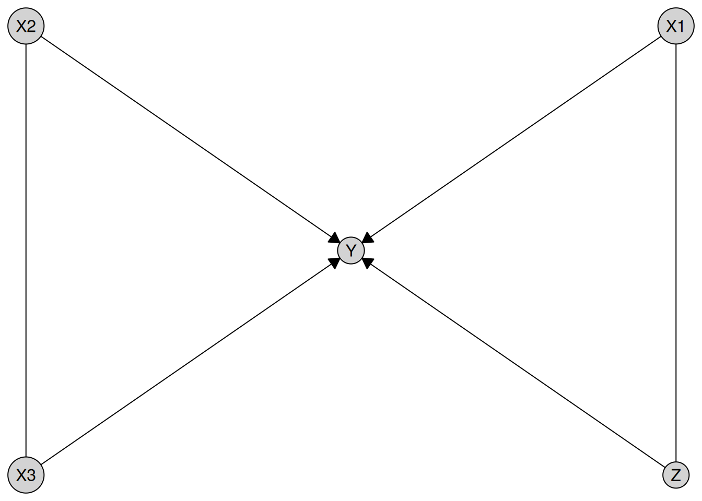

library(causalDisco)
#> causalDisco startup:
#> Java heap size requested: 2 GB
#> Tetrad version: 7.6.10
#> Java successfully initialized with 2 GB.
#> To change heap size, set options(java.heap.size = 'Ng') or Sys.setenv(JAVA_HEAP_SIZE = 'Ng') *before* loading.
#> Restart R to apply changes.Please note, custom tests are experimental and subject to change to improve usability and consistency across engines. We welcome feedback on the current interface and suggestions for improvement.
This vignette illustrates how to use custom conditional independence tests and custom scores with the disco() function in causalDisco. We show how to define user-specified tests and scores, and how to run causal discovery using these custom functions.
Note that Tetrad-based algorithms do not currently support custom CI tests, so this vignette will only cover the engines bnlearn, causalDisco, and pcalg.
Custom Tests
The interface for custom tests depends slightly on the engine being used. causalDisco and pcalg use the exact same interface, while bnlearn is slightly different for now. We plan to unify the interface across engines in a future release.
causalDisco and pcalg engines
A custom tests takes the signature function(x, y, conditioning_set, suff_stat, args), (args is an optional). x and y are the variables being tested for independence, conditioning_set is the conditioning set, and suff_stat is a list of sufficient statistics needed for the test (e.g. correlation matrix and sample size). The function should return a p-value indicating whether x and y are conditionally independent given conditioning_set.
Of course the suff_stat argument could just be the raw data, but for efficiency reasons, it is often better to precompute some sufficient statistics.
An example of a custom CI test is a partial correlation test based on the Fisher Z-transform, which can be implemented as follows:
my_test <- function(x, y, conditioning_set, suff_stat) {
C <- suff_stat$C
n <- suff_stat$n
vars <- c(x, y, conditioning_set)
C_sub <- C[vars, vars, drop = FALSE]
K <- solve(C_sub)
r <- -K[1, 2] / sqrt(K[1, 1] * K[2, 2])
z <- 0.5 * log((1 + r) / (1 - r))
stat <- sqrt(n - length(conditioning_set) - 3) * abs(z)
pval <- 2 * (1 - pnorm(stat))
pval
}
my_suff_stat <- function(data) {
list(
C = cor(data),
n = nrow(data)
)
}This can then be used with the causalDisco engine as follows:
data(num_data)
my_tpc <- tpc(
engine = "causalDisco",
test = my_test,
alpha = 0.05,
suff_stat_fun = my_suff_stat
)
result <- disco(data = num_data, method = my_tpc)
plot(result)
or the pcalg engine as follows:
my_pc <- pc(
engine = "pcalg",
test = my_test,
alpha = 0.05,
suff_stat_fun = my_suff_stat
)
result <- disco(data = num_data, method = my_pc)
plot(result)
If the custom test requires additional arguments, then the function signature should include an args parameter, i.e. be function(x, y, conditioning_set, suff_stat, args), and the additional arguments can be passed as a list to the args parameter when defining the method.
bnlearn
For bnlearn the signature should be the same, but you must pass suff_stat/data directly in the function, since bnlearn does not have a way to precompute sufficient statistics and pass them to the test function.
When defining a custom test for bnlearn, you can use either conditioning_set and suff_stat or z and data, which are the argument names bnlearn expects.
The test function should return either:
- A single numeric value (the p-value), or
- A numeric vector of length 2, where the second element is the p-value.
bnlearn requires the first element (the test statistic), but it is not used. If you return only the p-value, a dummy statistic will be automatically injected.
my_test_bnlearn <- function(x, y, conditioning_set, suff_stat, args = list()) {
not_used <- args$not_used
C <- cor(suff_stat)
n <- nrow(suff_stat)
vars <- c(x, y, conditioning_set)
C_sub <- C[vars, vars, drop = FALSE]
K <- solve(C_sub)
r <- -K[1, 2] / sqrt(K[1, 1] * K[2, 2])
z <- 0.5 * log((1 + r) / (1 - r))
stat <- sqrt(n - length(conditioning_set) - 3) * abs(z)
pval <- 2 * (1 - pnorm(stat))
pval
}
my_pc <- pc(
engine = "bnlearn",
test = my_test_bnlearn,
alpha = 0.05,
args = list(not_used = "Example of passing additional arguments")
)
result <- disco(data = num_data, method = my_pc)
plot(result)
Custom Scores
Not yet implemented, but will be added in a future release. Stay tuned for updates on this feature!